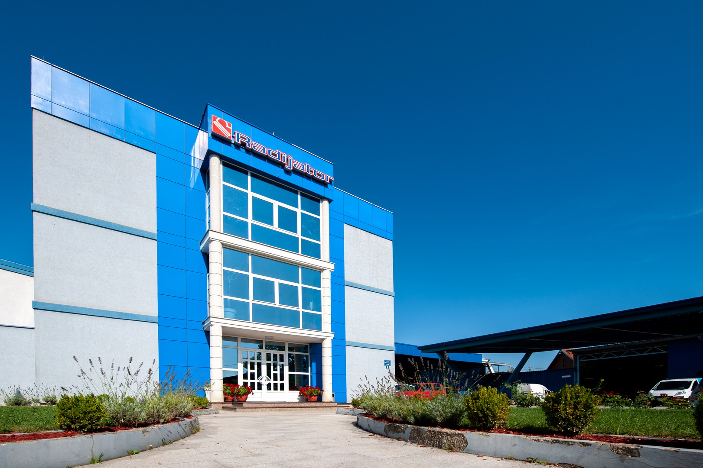
Tradicija proizvodnje
Radijator Inzenjering
Radijator inzenjering d.o.o. je pravni naslednik zanatske radnje Radijator, osnovane 1991. godine. Osnovna delatnost bila je montaza i odrzavanje centralnog grejanja, cime se firma bavi i danas.
Prvi toplovodni kotao na cvrsto gorivo izradjen je 1985. godine, a preduzece u danasnjoj formi postoji od 2002. godine.
Tehnologija i kvalitet
Proizvodnja po savremenim evropskim standardima
Kako se proizvodnja sirila i usavrsavala, kotlovi su poceli da se izradjuju najsavremenijim tehnologijama: lasersko secenje, CNC plazma postupak, CNC probijanje, robotsko zavarivanje i zavarivanje automatima.
Danas Radijator Inzenjering zaposljava preko 350 radnika, medju kojima je 40 diplomiranih masinskih inzenjera koji svakodnevno rade na unapredjenju kvaliteta proizvoda.
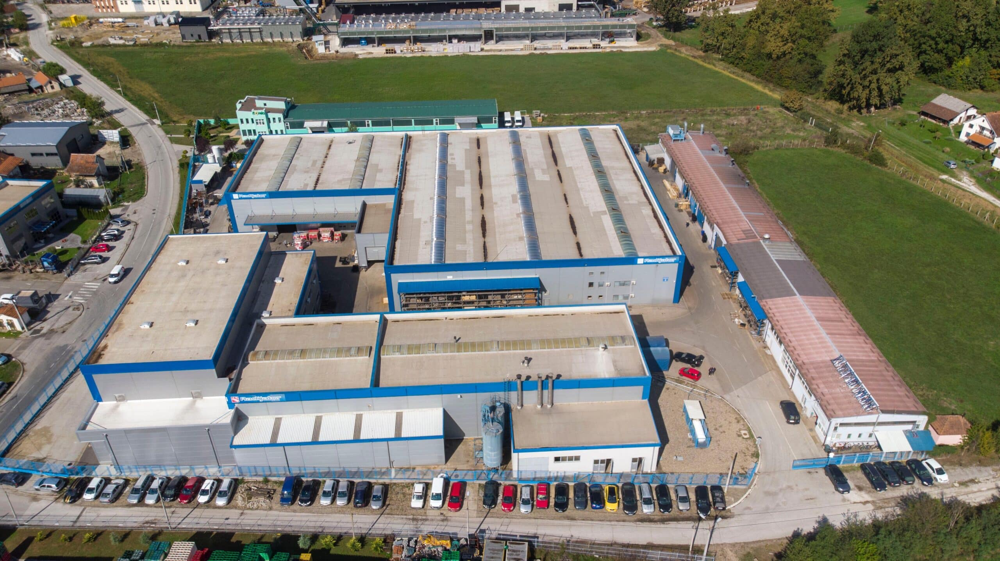
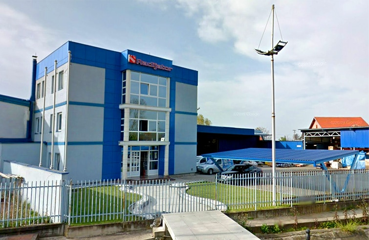
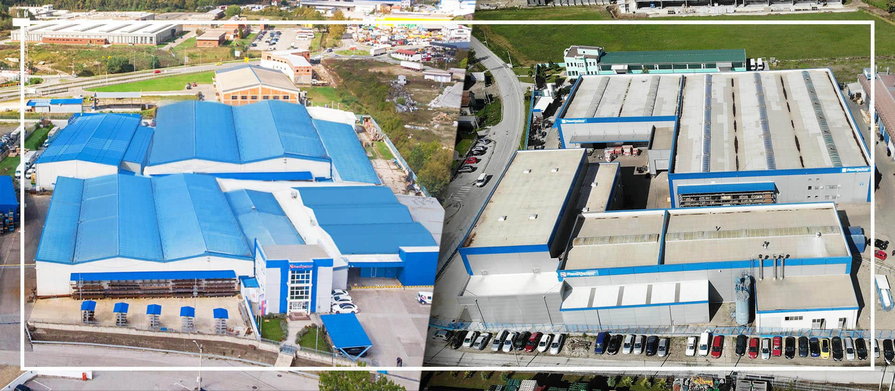
Kotlovi na pelet
Tri osnovna nacina dovoda peleta
Prezentacija pocinje podelom programa prema nacinu dolaska peleta u loziste. Ovaj redosled ostaje osnova za sve naredne slajdove.
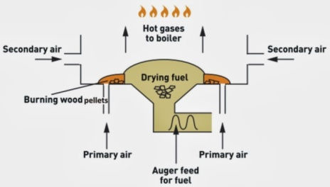
01Ispod resetke
Izviruce loziste, osnova za EcoFlame i povezane sisteme.
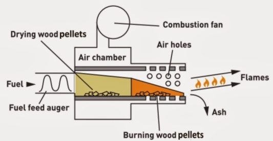
02Bocni dolazak
Pelet se dozira bocno, uz kontrolu vazduha i plamena.
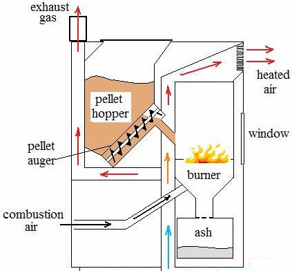
03Nasipno loziste
Jednostavnija platforma za dobar pelet i redovno odrzavanje.
Izviruce loziste
EcoFlame 25/30 i EcoFlame Plus
Kotao je namenjen sagorevanju drvnog peleta u automatskom rezimu i postavlja se u kotlarnicu.
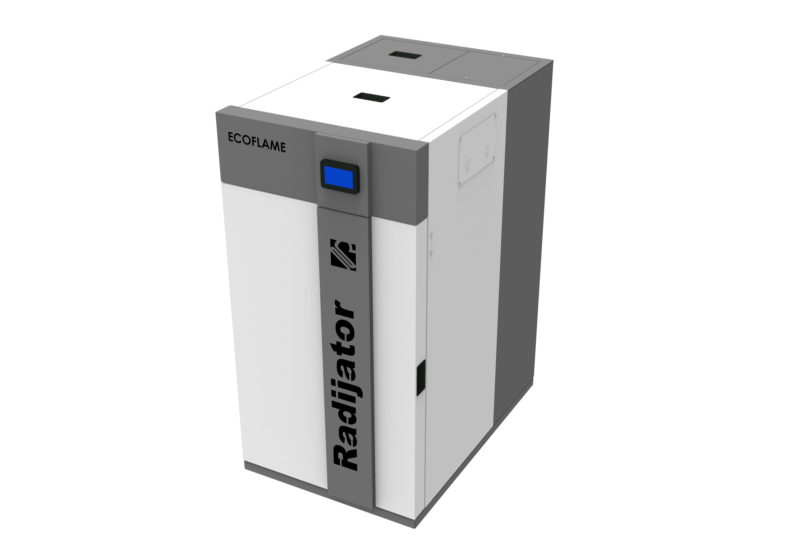
Story EcoFlameModeliEcoFlame 25/30, EcoFlame 25/30 Plus
Izmenjivaccevni izmenjivac sa ciscenjem
DozerGGM 40W
Potpalainox Vimosa 300W
Lozisteliveni T-komad, ventilator MplusM / ebm papst 65W
EcoFlame / automatski rezim / kotlarnica
Dodatna oprema
Plus oprema za komforniji sistem
Ovaj slajd ostaje odmah posle EcoFlame konstrukcije, jer objasnjava sta se dobija nadogradnjom sistema.
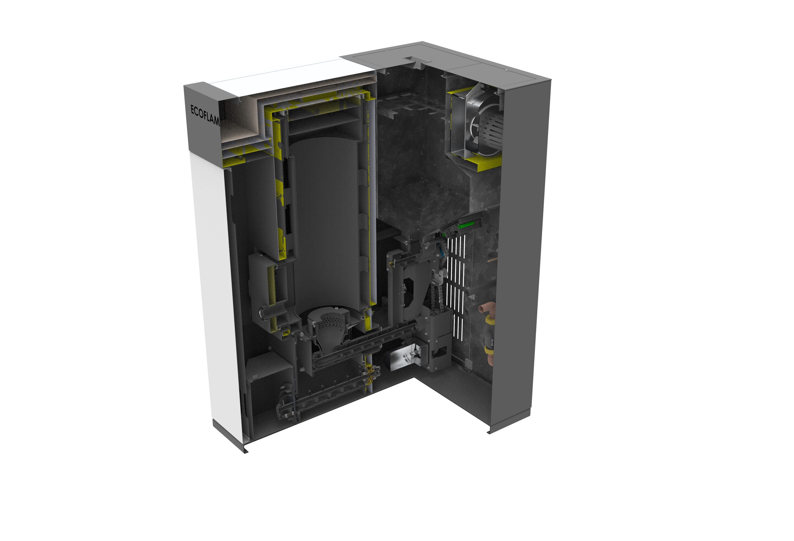
Silosupravljanje dodatnim silosem, senzor nivoa peleta i transporter
Opcijesobni termostat, Modbus translator, 4HEAT
PlusWILO elektronska pumpa, sigurnosni ventil, odzracni ventil
Prednostibolji stepen korisnosti, automatika vodi dve pumpe
Dodatnomoguce poruciti silos 320 kg
EcoFlame Plus / dodatna oprema / manja kotlarnica
60-300 kW
TKAN ind. osnovni i INTEGRA
Industrijski TKAN dolazi posle kucnog TKAN-a, kao prirodan nastavak iste porodice proizvoda u vecim snagama.
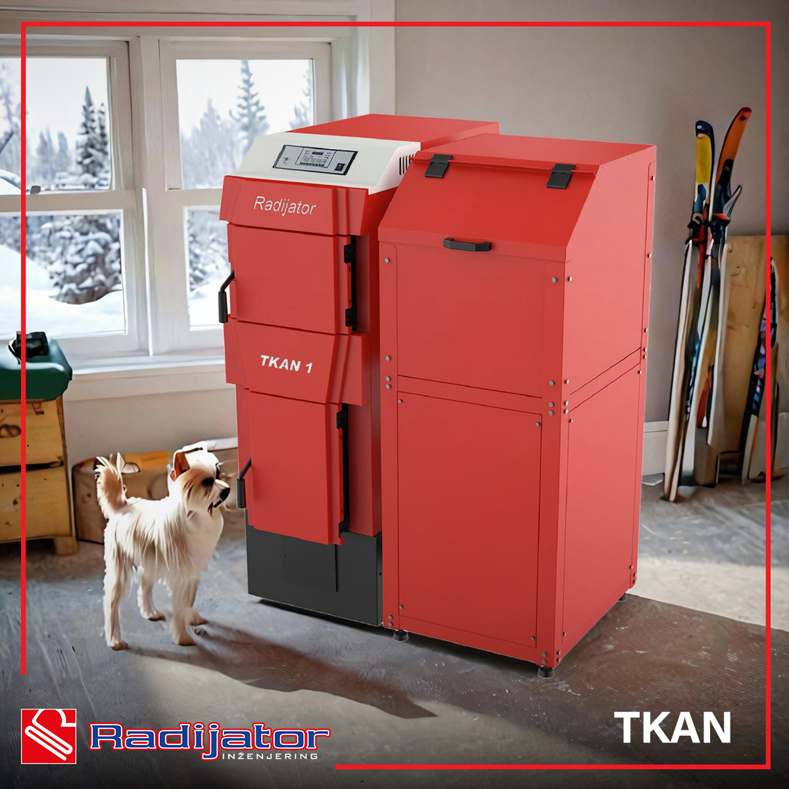
PodelaTKAN ind. osnovni i TKAN ind. INTEGRA
Opseg60-300 kW
INTEGRAodprasivanje i ciklon
Gorivopelet automatski, drvo veoma kratko
Konstrukcijacevni izmenjivac, Leister 1.6 kW, primarni i sekundarni ventilator
TKAN industrijski / vece snage / INTEGRA
Presek
TKAN ind. osnovni i INTEGRA kroz konstrukciju
Ovaj slajd je zadrzan kao zaseban tehnicki presek, bez mesanja sa drugim proizvodima.
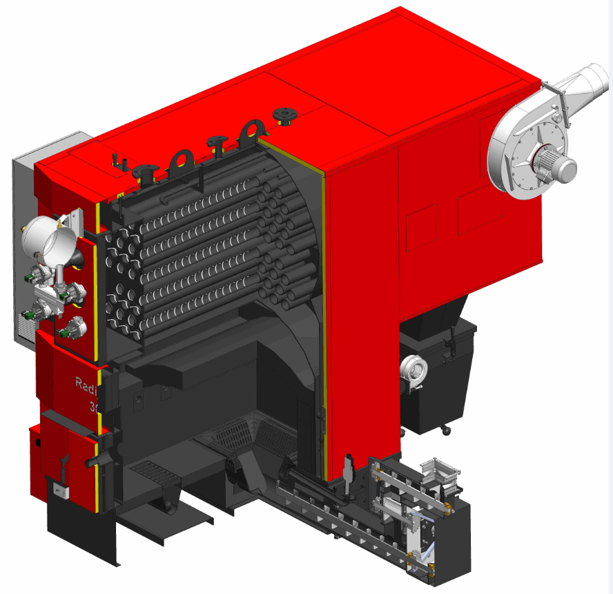
PresekTKAN ind. osnovni 60-300 kW
INTEGRATKAN ind. INTEGRA 60-300 kW
Ciscenjeloziste sa spiralama za ciscenje
Motortrofazni kod kotlova od 100 kW
Presek / loziste / izmenjivac / ciklon
UNI / Biolux / Cuba
Kotlovi sa nasipnim lozistem
Ova grupa dolazi posle EcoComfort-a, bas kao u PPTX-u. Namenjena je dobrom drvnom peletu i zahteva redovnije odrzavanje.
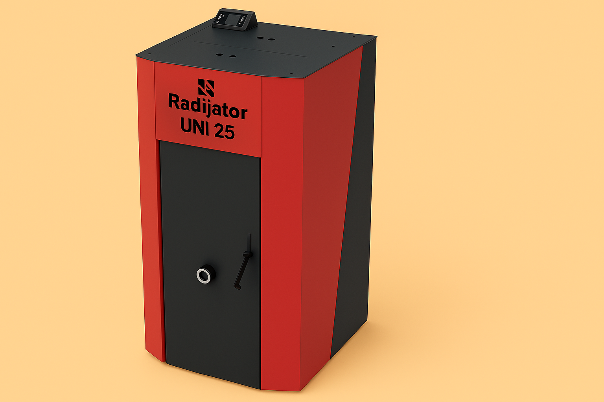
UNIUNI 15/20/25 Plus
Kotlarnica, 15-25 kW instalacije.
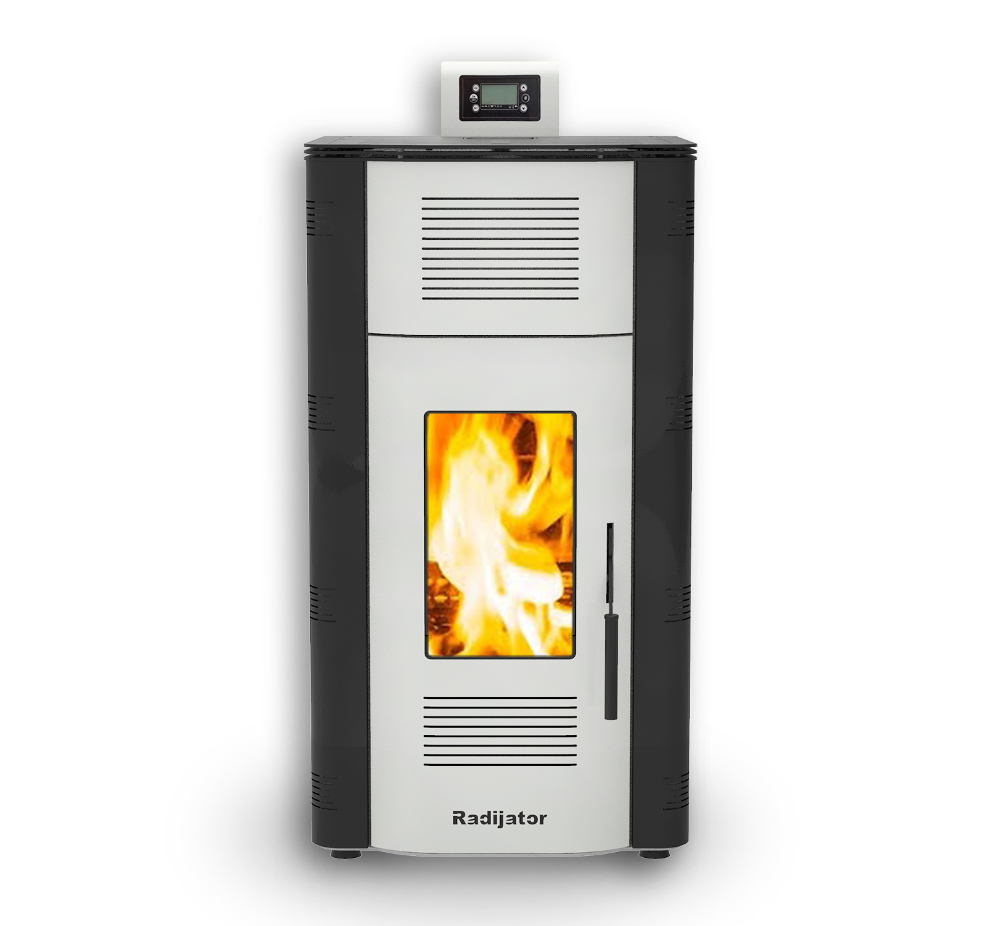
BioluxBiolux 14/20
Kamin za dnevni boravak.
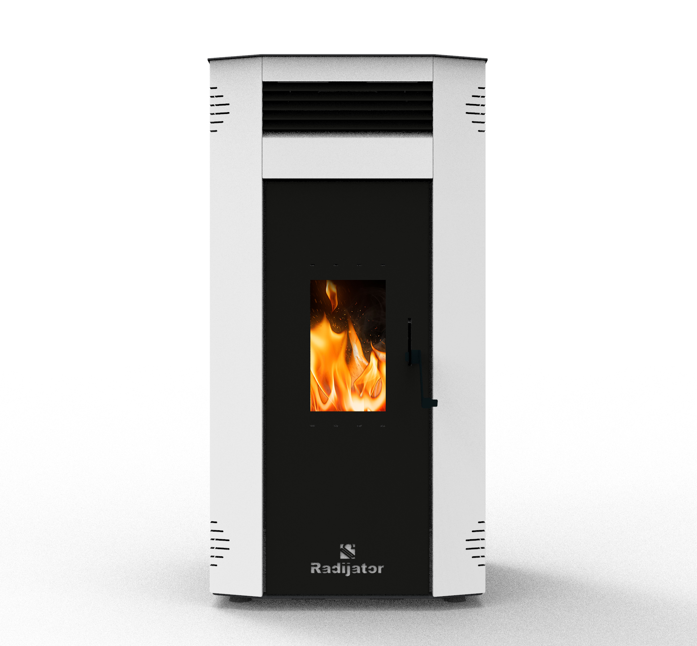
CubaCuba 15/20
Kamin za stanovanje.
Biolux 14/20
Kamin za dnevni boravak
Biolux koristi cevni izmenjivac, nasipno loziste, dozer, silos 45 kg, FKK keramicki grejac i SY250 pelet automatiku.
Biolux 20 / 14
Namena: dnevni boravak.
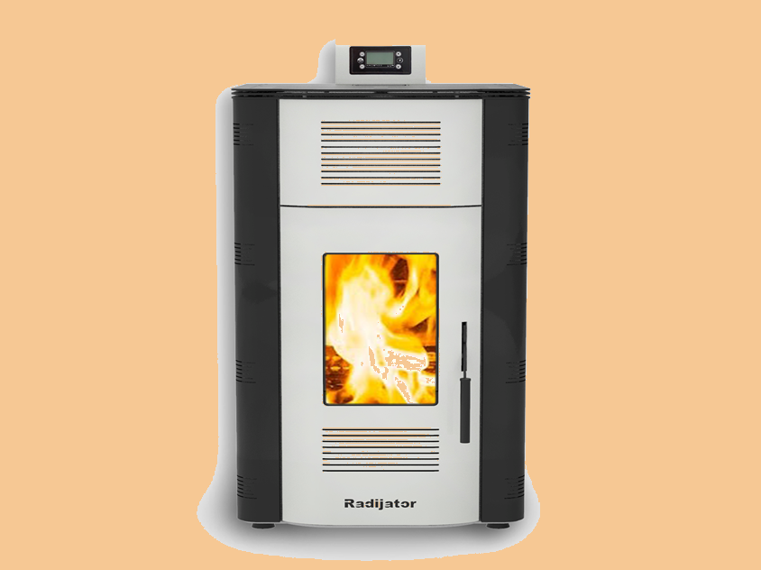
Komponente
Ekspanziona posuda 10L, Wilo 25/6, sigurnosni ventil, odzracni ventil, presostati.
UNI 15/20/25
Nasipno loziste za kotlarnicu
UNI 15 je za instalaciju 15 kW, UNI 20 za 20 kW, a UNI 25 za 25 kW. Konstrukcija prati istu logiku nasipnog lozista.
Story UNI
UNI linija
Keramicki FKK grejac i SY250 pelet automatika.
Kotlarnica
Nasipno loziste, cevni izmenjivac, dozer i silos 45 kg. Namenjeno instalacijama od 15 do 25 kW.
Kotlovi serije K
K18-50 kW
Prvi slajd K serije ostaje proizvodni uvod: konstrukcija, materijali i osnovne karakteristike.
Karakteristikekoso loziste, rostovi, klapna
SnagaK18 do K50 kW
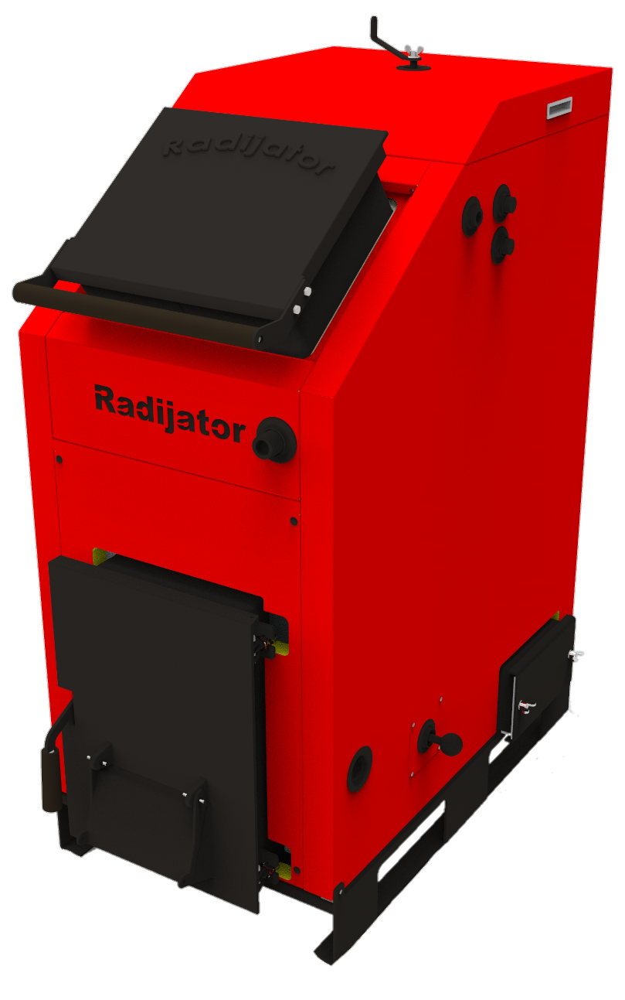
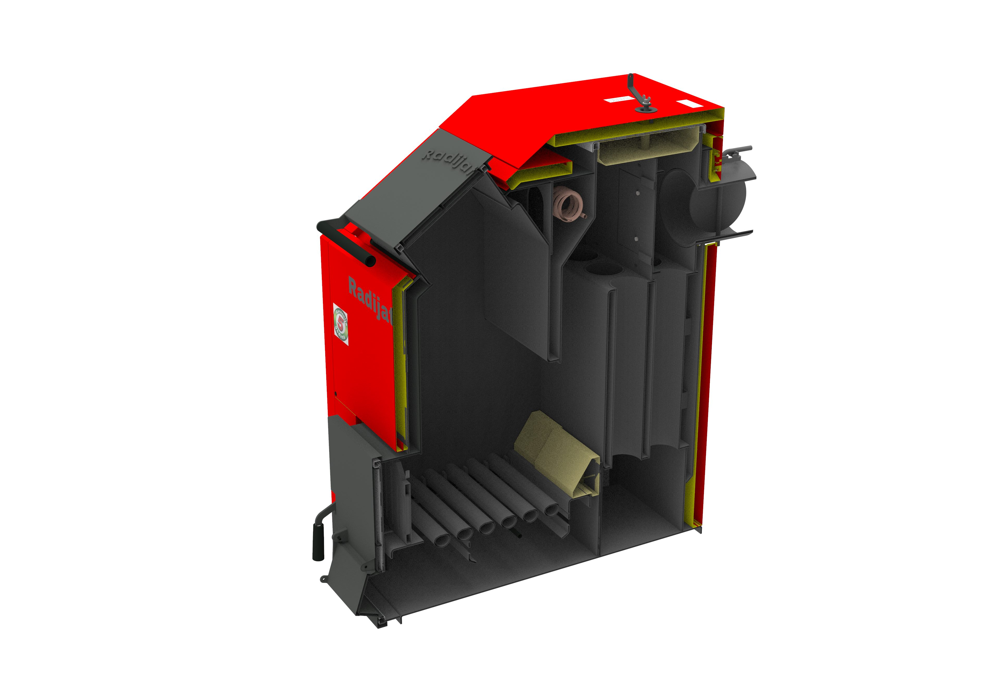
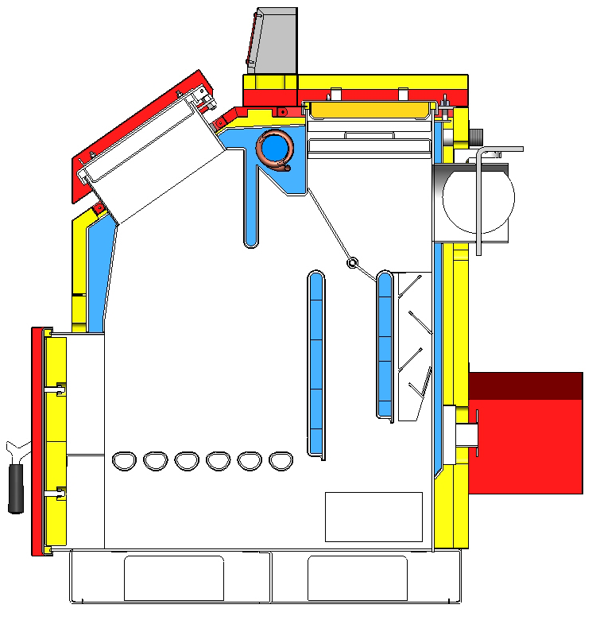
Poprecni presek
Donje sagorevanje
Drugi K slajd je samo presek, da se ne mesa sa uvodnim modelom.
SerijaK18-50 kW
Presekpoprecni presek kotla
Sagorevanjedonje sagorevanje
K serija / poprecni presek / donje sagorevanje
Kotlovi serije FK
FK1, FK2, FK3, FK4
FK serija se uvodi nakon K serije i dodaje automatiku i ventilator.
Snaga18-50 kW
Karakteristikekoso loziste, automatika, ventilator, rostovi, klapna
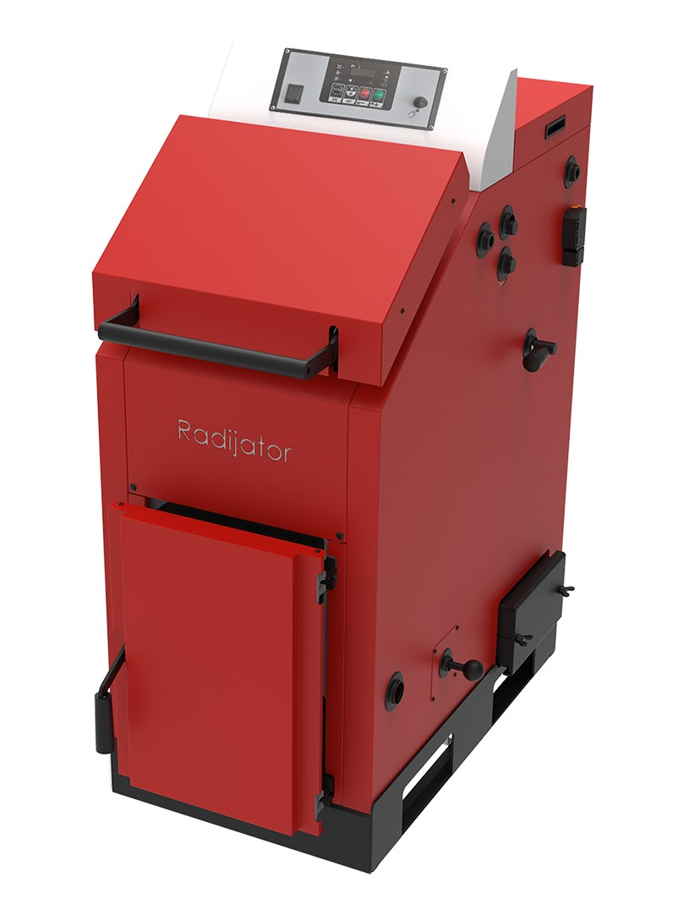
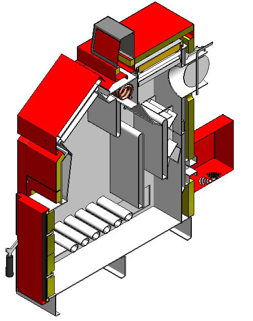
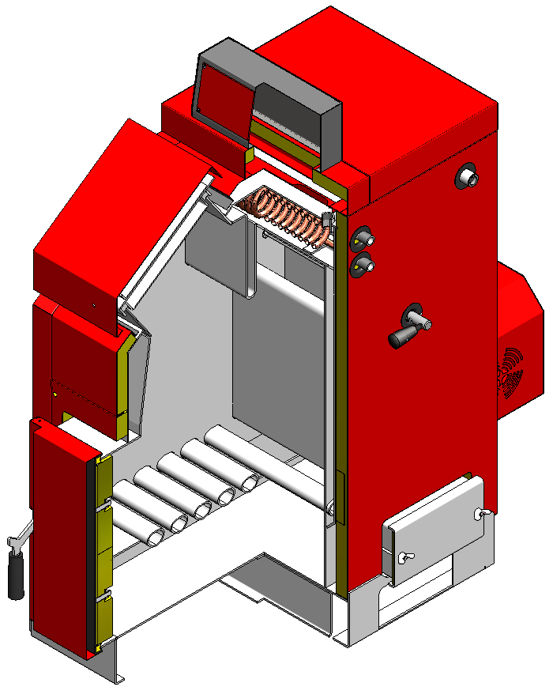
Poprecni presek FK
Spirala za termicko osiguranje
Tehnicki presek FK serije ostaje zaseban, bas kao u izvornoj prezentaciji.
Presekpoprecni presek FK
Sigurnostspirala za termicko osiguranje
Regulacijaautomatika i ventilator
FK serija / poprecni presek / termicko osiguranje
Nasipno loziste
GRENNY
GRENNY sada koristi svoje slike iz PPTX-a, ne pozajmljene slike drugih modela.
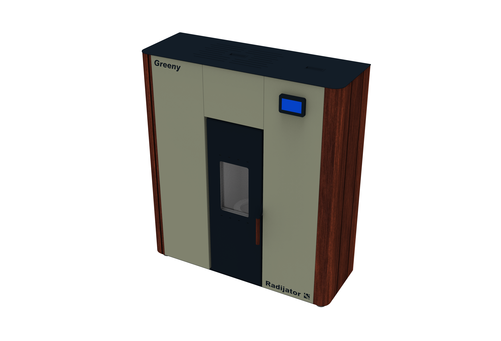
Izmenjivaccevni izmenjivac
Lozistenasipno loziste
Silos30 kg
AutomatikaSY250 pelet
Komponenteekspanziona posuda 10L, Wilo 25/6, sigurnosni i odzracni ventil, presostati
GRENNY / proizvod / presek / komponente
Zavrsni slajd iz PPTX-a
TKAN MINI
TKAN MINI zatvara prezentaciju kao kompaktno resenje za sagorevanje peleta i drva u automatskom rezimu.
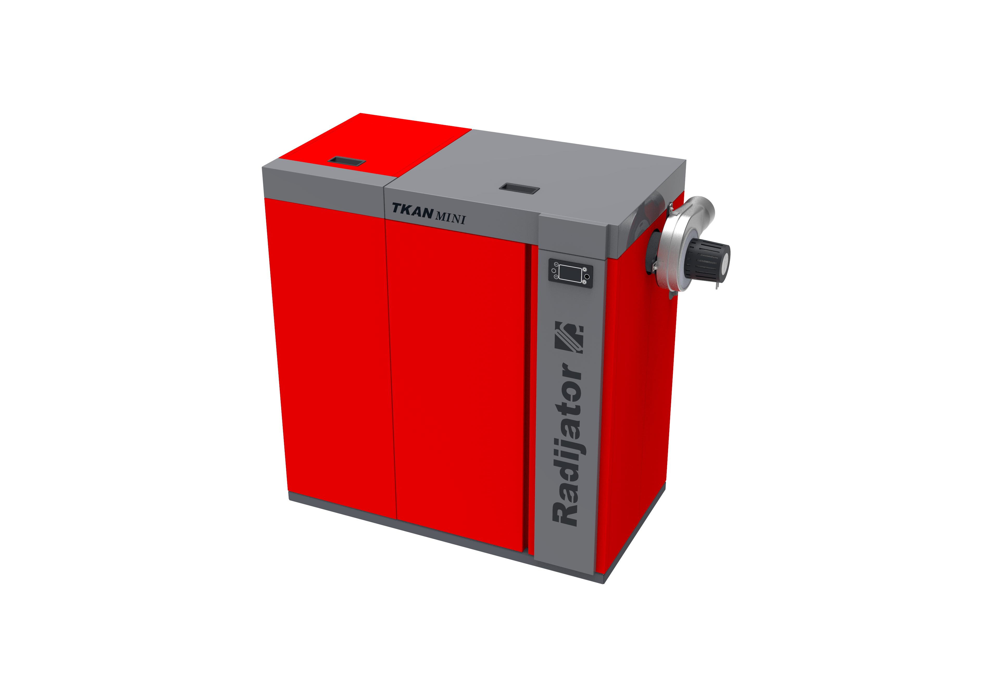
Namenasagorevanje peleta i drva u automatskom rezimu
Izmenjivaccevni izmenjivac sa ciscenjem
DozerGGM 40W
Potpalainox Vimosa 300W
Lozisteliveni T-komad, ventilator MplusM / ebm papst 65W
TKAN MINI / pelet i drva / automatski rezim